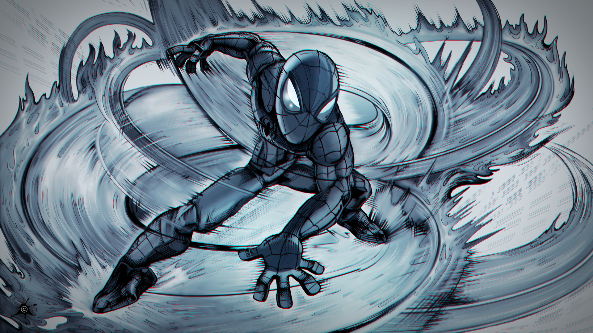
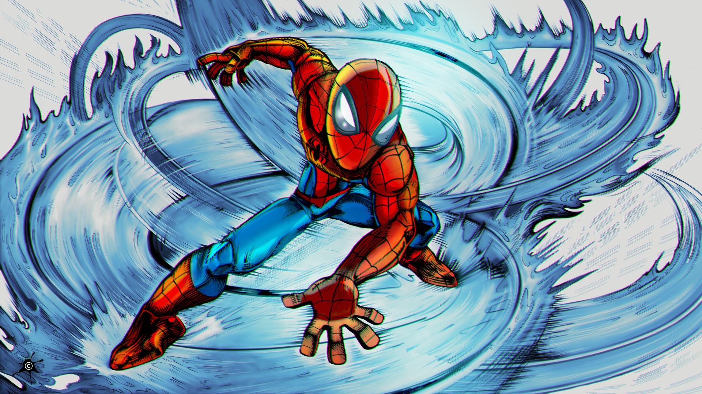
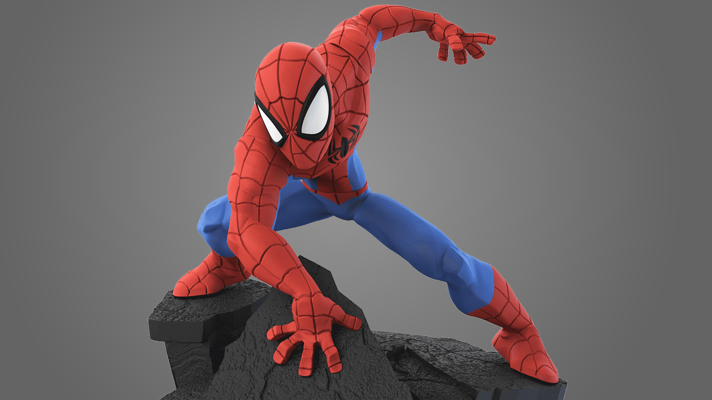

Illustration • Dynamic Composition • Digital Painting

This project was developed as part of a course I designed for my students. The objective was to draw the Spidey Infinity toy while accurately reproducing the superhero landing pose based on a provided statue reference. The workflow begins with a rough sketch, progressively refined into clean line art. Using the same lighting direction as the reference, the illustration is developed in a comic-book style, integrating hatching, line weight variation, and action lines to reinforce dynamism and impact.
Developed from raw rough sketch into refined, high-quality line art; focused on character silhouette and gesture.
Mastered the complex "superhero landing" pose, ensuring correct proportions and convincing depth from a challenging angle.
Integrated traditional comic techniques, including cross-hatching, varied line weights, and dynamic action lines.
Adobe Photoshop, Digital Painting, Color Theory, Perspective, Dynamic Composition.
